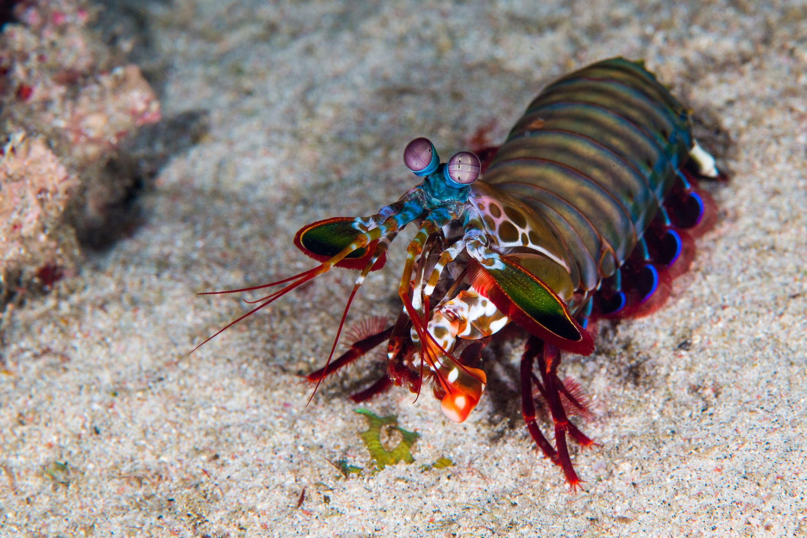

Informações Gerais:
O Stomatopoda, também conhecido como camarão Mantis não é um camarão , exceto para o fato de que é um artrópode, também não está relacionado com o louva-deus. Em vez disso, camarões louva são 500 espécies diferentes que pertencem à ordem Stomatopoda. Para distingui-los de camarão verdade. camarões Mantis são conhecidos por suas garras poderosas, que eles usam para ameaçar ou esfaquear sua presa. Além de seu método de caça feroz, mantis camarões também são conhecidos por seu extraordinário sentido da visão.
- Nome científico : ODONTODACTYLUS SCYLLARUS
- Outros nomes : Stomatopod, mar gafanhotos, polegar splitter, assassino camarão
- Características particulares : Olhos montado em hastes móveis que se podem mover independentemente uns dos outros
- Tamanho médio : 10 cm (3,9 pol)
- Dieta : carnívora
- Esperança de vida : 20 anos
- Habitat : ambientes marinhos tropicais e subtropicais rasos
- Estado de conservação : Não avaliado
- Reino : Animalia
- Filo : Arthropoda
- Subfilo : Crustacea
- Classe : Malacostraca
- Order : Stomatopoda
- Fato divertido : Um ataque de uma garra mantis camarão é tão forte que pode quebrar vidro do aquário.
Fatos sobre o Stomatopoda
Visão

Stomatopoda tem a visão mais complexa do reino animal, até mesmo superior ao de borboletas . O tamarutaca tem olhos compostos montados em hastes, e pode rodar de forma independente um do outro, para examinar os seus arredores. Enquanto os seres humanos têm três tipos de fotorreceptores, os olhos do camarão mantis têm entre 12 e 16 tipos de células fotorreceptoras. Algumas espécies podem até ajustar a sensibilidade de sua visão de cores. O aglomerado de fotorreceptores, chamado ommatidia, estão dispostos em filas paralelas em três regiões. Isso dá a cada percepção de profundidade olho e visão trinocular. Camarões louva pode perceber comprimentos de onda de fundo ultravioleta através do espectro visível e no vermelho longínquo. Eles também podem ver a luz polarizada. Algumas espécies podem perceber luz polarizada circularmente-uma capacidade não encontrada em qualquer outras espécies animais. Sua visão excepcional dá o camarão mantis uma vantagem de sobrevivência em um ambiente que pode variar de brilhante para escuro e lhes permite ver e distância indicador para cintilante ou objetos translúcidos.
Comportamento

Camarões Mantis são muito inteligentes. Eles reconhecem e lembram de outros indivíduos por visão e cheiro, e eles demonstram uma capacidade de aprender. Os animais têm um comportamento social complexo, que inclui a luta ritualizada e atividades coordenadas entre os membros de um casal monogâmico. Eles usam fluorescentes padrões para sinalizar uns aos outros e, possivelmente, outras espécies.
Dieta e caça
Para a maior parte, o camarão mantis é um caçador solitário, recluso. Algumas espécies perseguir ativamente presas, enquanto outras táxis dentro do covil. O animal mata por desdobramento rapidamente as suas garras raptorial com uma espantosa aceleração de 102,000 m / s2 e velocidade de 23 mps (51 mph). A greve é tão rápido que ferve água entre o camarão e sua presa, produzindo bolhas de cavitação. Quando as bolhas de colapso, as visitas de ondas de choque resultantes presa com uma força instantânea de 1500 Newtons . Assim, mesmo se o camarão erra o alvo, a onda de choque pode atordoar ou matá-lo. A bolha colapso também produz luz fraca, conhecido como sonoluminescência. Presa típico inclui peixe, caracóis, caranguejo, de ostras e outros mariscos. Camarões Mantis também vai comer membros de sua própria espécie.